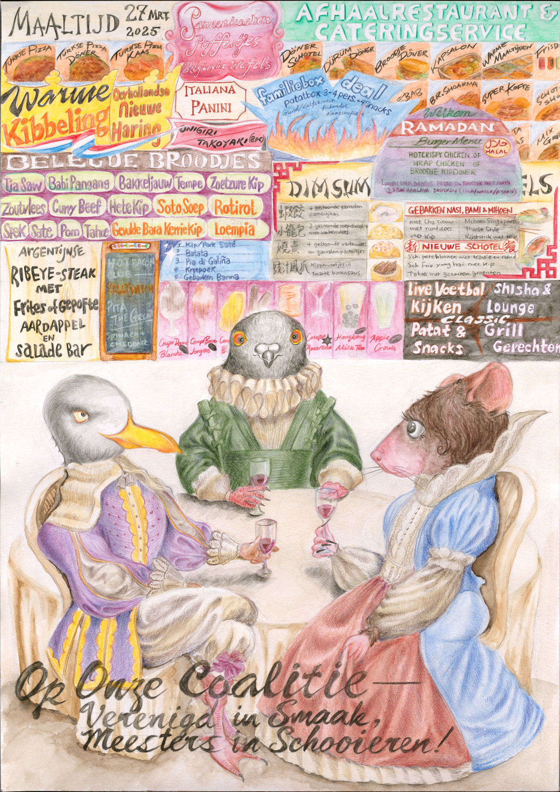
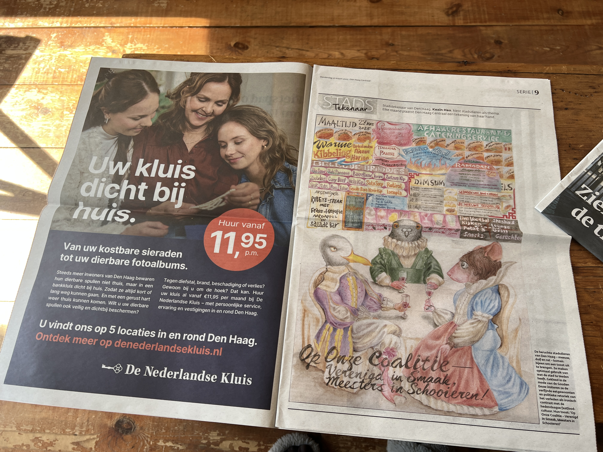

What's going on?
In this illustration, The Hague’s notorious urban animals—a seagull, a pigeon, and a rat—gather for a toast. Each has its own way of scavenging, yet together they make the most of the city’s offerings: the seagull tears open trash, the pigeon picks up crumbs, and the rat cleans up at night.
Their feast unfolds against a backdrop of The Hague’s rich food culture, where cuisines from around the world come together, shaped by migration and history. Dressed in the opulent fashion of the Dutch Golden Age, they mimic the refined dining etiquette and political rhetoric of the past—an ironic contrast to their fast-food setting and everyday hustle. Their toast, “Op onze coalitie—verenigd in smaak, meesters in schooieren!”, celebrates both the city’s layered history and the clever adaptability of its inhabitants.
Their feast unfolds against a backdrop of The Hague’s rich food culture, where cuisines from around the world come together, shaped by migration and history. Dressed in the opulent fashion of the Dutch Golden Age, they mimic the refined dining etiquette and political rhetoric of the past—an ironic contrast to their fast-food setting and everyday hustle. Their toast, “Op onze coalitie—verenigd in smaak, meesters in schooieren!”, celebrates both the city’s layered history and the clever adaptability of its inhabitants.
Medium
Water color and color pencil on paper,
A2
Edition
Press
Den Haag Central 2025-03-27
Stadstekenaar

